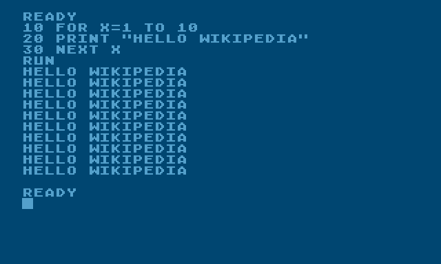

Key Milestones in Computer Science History
Pre-1900s: Foundations
- Abacus (2700 BCE): One of the first tools for performing calculations.
- Gottfried Wilhelm Leibniz: Developed binary number system and early calculator (Stepped Reckoner).
- Charles Babbage: Designed the Analytical Engine, the first mechanical computer (1830s).
- Ada Lovelace: Wrote the first algorithm—recognized as the first computer programmer.
Long before modern computers, human civilizations across the globe were developing ways to solve problems, record data, and automate processes. Ancient tools like the abacus, algorithms from early Middle Eastern scholars, and mechanical inventions like Pascal’s calculator reveal a universal drive to make sense of the world through logic and numbers. These early breakthroughs weren’t considered "computer science" at the time, but they set the intellectual groundwork for it. This era shows how curiosity and need — rather than advanced tech — are the true starting points of innovation.
Early to Mid-1900s: Theoretical and Physical Breakthroughs
- Alan Turing (1936): Created the concept of the Turing Machine, forming the basis for computation theory.
- Claude Shannon (1948): Developed information theory, foundational for digital communication.
- Atanasoff-Berry Computer (1939–42): First electronic digital computer.
- ENIAC (1945): First general-purpose programmable electronic computer.
This period saw the rise of abstract thinking and theoretical models that shaped how computers would function. People like Alan Turing and John von Neumann weren’t just designing machines — they were redefining what it meant to “compute.” Wartime needs accelerated this progress, leading to the development of machines that could process data at unprecedented speeds. However, access to these advancements was highly restricted — often controlled by governments and elite institutions. Computer science was emerging, but it was still largely hidden from public view.
1960s–1980s: The Digital Revolution
- BASIC Programming Language (1964): Made computing accessible to more people.
- ARPANET (1969): First operational packet-switching network, led to the internet.
- Apple I (1976): Among the first widely available personal computers.
As digital computers became more powerful and slightly more affordable, industries began integrating them into business, government, and scientific work. Universities started offering computer science programs, shaping a new generation of tech workers. But outside these spaces, computing remained out of reach for the average person. This era was as much about limiting access as it was about expanding capabilities — and it marked the beginning of a digital divide that would grow in decades to come.
Modern Era: Expansion and Innovation
- Graphical User Interfaces (1980s): Simplified computer use for the general public.
- Internet Commercialization (1990s): The World Wide Web went public, triggering the tech boom.
- Cloud Computing & AI (2000s–present): New frontiers in data, machine learning, and global connectivity.
Today’s world is defined by constant connectivity, automation, and data. Smartphones have put computing power in billions of hands, and technologies like cloud storage and artificial intelligence are transforming everything from healthcare to art. These tools are reshaping what we expect from our lives and our relationships with information. At the same time, new questions arise: Who controls our data? Who gets to build and shape the future of tech? And how do we ensure that progress benefits more than just a select few?

BASIC Programming Language

Ada Lovelace, the first computer programmer

Apple I, one of the first personal computers
The history of computer science is more than machines and milestones — it’s about people solving problems, expanding knowledge, and forging connections. From the abacus to AI, centuries of innovation have shaped the way we live and think. Visionaries like Ada Lovelace and Alan Turing reimagined what machines could do, while the rise of personal computers and the internet brought tech into everyday life. By understanding not just the inventions, but also their impact and who they included or left behind, we can imagine a future where innovation is thoughtful, and access is a right — not a privilege.
The history of tech is a story of curiosity, creativity, and constant reinvention. From ancient tools to digital dreams, the industry keeps evolving—and the next chapter is just beginning.